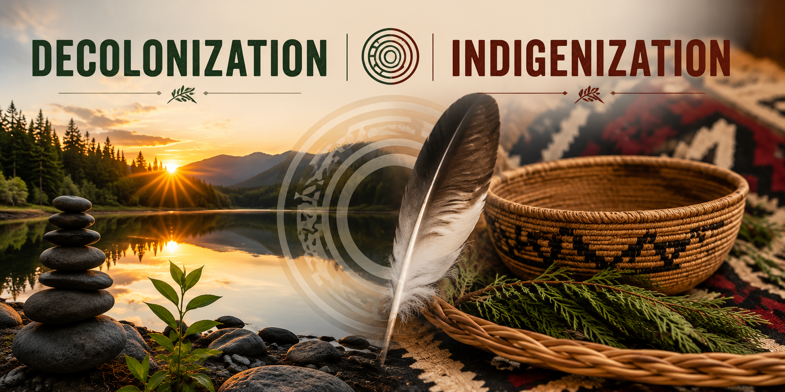

Pathways: Five-Year Report

Learning
From exploring the Pathways: Five-Year Report (2019), I learned that reconciliation is an ongoing journey that requires continuous action, accountability, and collaboration rather than a one-time initiative. The report highlights that while Canada has made progress in areas such as Indigenous education, language revitalization, and public awareness, many of the Truth and Reconciliation Commission's Calls to Action remain incomplete. I also learned that meaningful reconciliation depends on listening to Residential School Survivors, supporting Indigenous self-determination, and building respectful relationships with Indigenous communities (National Centre for Truth and Reconciliation [NCTR], 2019).
Why I Selected This
I selected this learning because it reinforced my understanding that reconciliation is a shared responsibility and that educators have an important role in supporting this work. Before exploring the Pathways Report, I understood the importance of teaching Indigenous histories, but this report helped me realize that meaningful reconciliation also requires sustained commitment, ongoing reflection, and action. I was especially inspired by the report's emphasis on learning from Indigenous voices, building respectful relationships, and recognizing Indigenous resilience alongside the impacts of colonization.
How I Will Apply This in My Classroom
- Use authentic Indigenous-authored books and resources to ensure students learn from Indigenous perspectives.
- Integrate Indigenous histories, cultures, languages, and the Truth and Reconciliation Commission's Calls to Action throughout the school year rather than as isolated lessons.
- Encourage inquiry-based, land-based, and storytelling approaches that reflect the First Peoples Principles of Learning.
- Help students explore the resilience, leadership, and ongoing contributions of Indigenous Peoples while learning about the historical impacts of residential schools and colonialism.
- Invite local Elders, Knowledge Keepers, or Indigenous Helping Teachers to share their knowledge while following appropriate community protocols.
- Create opportunities for students to demonstrate their learning through discussion, art, writing, presentations, and multimedia projects, fostering empathy, critical thinking, and respectful relationships.